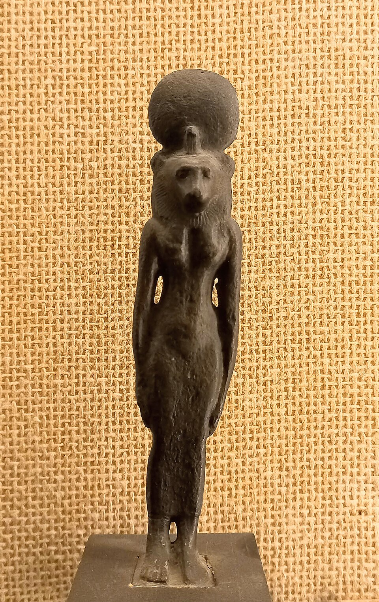

Кто такая Сехмет
Сехмет — «могучая»: женщина с головой львицы, увенчанной солнечным диском и уреем. Она — «око Ра», его оружие: когда бог-солнце хочет наказать человечество, он отправляет Сехмет — и она дышит на врагов огнём, а в битве «топчет их кровь как грязь». Эпитеты: «госпожа неба», «та, что любит жар», «леди Ашу» (пограничные земли Нубии, куда египтяне отправляли карательные походы под её покровительством).
Супруга Птаха в мемфисской триаде — и это точная пара: ремесло и его разрушительная сила, спокойный демиург и его гнев. В имени её — та же фонетика, что у «сехем» — семитского владыки: в Новом царстве Сехмет ассоциировали с войной империи, фараоны называли её своей «спутницей колесницы».
Миф о красном пиве
«Книга Небесной Коровы» (вставка в «Книгу мёртвых» и папирусы Турин/Каир): люди заговорили против состарившегося Ра. Совет богов решает послать «око», бывшее в Ра, — Хатор-Сехмет. Она спускается в Дедун (предположительно Элефантина/Нубия) и «веселится, убивая людей»; её пасть — вонь жертв достигает небес. Чтобы остановить избиение, Ра приказал налить в поля семь тысяч чанов пива, смешанного с «плодом фрулы» — красной охрой — поля выглядят как кровавое наводнение. Левый? богиня напилась крови-пива и «успокоилась»: проснувшись, она не узнаёт людей и «любит род людской». Так гнев переплавляется в любовь: Сехмет оборачивается Хатор, ласковой коровой. Этот миф объясняет и праздник «Питья пьяного» в конце года — ритуальное опьянение ради спасения мира.
Чума и врачевание
Логика та же, что с Анубисом: та, кто насылает мор, его и снимает. «Мор Сехмет» — устойчивое выражение эпидемии; жрецы Сехмет славились как врачи («жрецы Сехмет» — титул лекарей в ряде текстов), а на папирусах против «огня в теле» взывают к ней же, что и в лечении. В храме её статуй в Мемфисе и в Карнаке (район Мут, «ашеру»?) — сотни экземпляров времён Аменхотепа III: триста с лишним статуй «Сехмет госпожи Ашет-Иабет», спасительных «доз» богини, расставленных для усмирения её же гнева — магия множества.
Амулеты Сехмет носили на шее: маленькая львица из красной яшмы или фаянса — «защита от её же стрел», то есть от болезни и насильственной смерти.